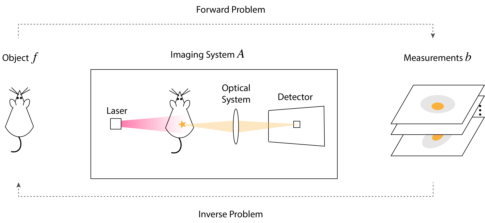

Overview¶
As seen in the previous chapter, biomedical optical imaging relies on the interactions between light and the biological object under investigation to retrieve information on its composition, structure, or functionality. The measurements of an imaging system, collected by the detector and usually corrupted by noise, are often not readily the physical quantities that we are interested in. For example, OPT measurements consist of projections of the object acquired from multiple angles and do not directly correspond to the image of the object. To reconstruct the desired image, we first need to understand the imaging system and the relationship between the target quantity and the measured data. This step, called the forward problem, typically involves mathematical tools to precisely describe the imaging principles and the data acquisition process. Once we have crafted a model, we can recover the unknown quantity (e.g., the 3D intensity image in the case of OPT) from the measurement (e.g., the sinogram of an OPT experiment) via the resolution of an inverse problem. We explain these two steps, the relevant mathematical concepts, and computational tools in detail. A generic imaging system is shown in Fig. 9.


Fig. 9 A generic optical imaging system.¶
We first introduce the notations for this chapter. We write a continuous function defined on the \(d\)-dimensional real space as \(f(\mathbf{x})\), \(\mathbf{x}=(x_1, \ldots, x_d)\in\mathbb{R}^d\), or more compactly \(f(\cdot)\), or simply \(f\). For instance, a 3D sample is represented by a function \(f\in L_2(\mathbb{R}^3)\), and measurements on the detector plane (in most cases a 2D camera) are denoted by a function \(b\in L_2(\mathbb{R}^2)\). We denote a sequence by \(c[\boldsymbol{k}]\), \(\boldsymbol{k}=(k_1, \ldots, k_d)\in\mathbb{Z}^d\), or simply \(c[\cdot]\), and an operator by a calligraphic letter, e.g. \(\mathcal{A}\). A vector is written as a bold lowercase letter, e.g. \(\mathbf{c}\). A matrix (discrete version of a linear operator) or the discrete version of a non-linear operator is represented by a bold uppercase letter, e.g. \(\mathbf{A}\). The spaces of square-integrable and square-summable functions are denoted by \(L_2(\mathbb{R}^2)\) and \(\ell_2(\mathbb{Z}^2)\), respectively. The \(\ell_p\)-norm of a vector \(\mathbf{c}=(c_1, \ldots, c_N)\in\mathbb{R}^N\) is defined as \(\|\mathbf{c}\|_p = \left(\sum_{l=1}^L |c_l|^p\right)^{\frac{1}{p}}\). We mostly encounter the \(\ell_2\)-norm and \(\ell_1\)-norm in this thesis. The symbol \(\nabla\) refers to the gradient of either a vector or a function depending on the context.
Forward Model¶
The first step towards solving inverse problems is to construct the forward imaging model. The closer the model approximates reality, the more likely it is to achieve an accurate estimate of the target image. In this section, we explain it with the help of a generic forward operator \(\mathcal{A}\) which encompasses the physical acquisition process during an experiment.
Continuous Formulation¶
We denote the unknown image of interest as \(f\), the measurements as \(b\), and the noise in the measurement as \(n\). Then, we obtain a generic forward model
The function \(f\in L_2(\mathbb{R}^d)\), which represents the sample, is a square-integrable function on \(\mathbb{R}^d\), \(d=2,3\). We usually assume that \(f\) has a compact support \(\Omega\subset\mathbb{R}^d\), where the bounded domain \(\Omega\) is the region of interest in the sample. The function \(b\in L_2(\mathbb{R}^2)\) represents the image on the 2D camera plane. In practice, experiments inevitably involve some kind of noise in the measurements. In Eq. (3), we assume that the noise is additive. For instance, a common type of noise is the Gaussian noise where its value follows a normal distribution.
The forward operator \(\mathcal{A}_{\Theta}: L_2(\mathbb{R}^d) \to L_2(\mathbb{R}^2)\) can be linear or nonlinear. It often depends on a set of parameters, denoted by \(\Theta\), which characterizes the imaging system. Constructing the operator \(\mathcal{A}\) is a critical step in any imaging task. It requires a solid understanding of the underlying physics, including light propagation, optical principles of the system, detector characteristics, and acquisition protocols, as well as appropriate mathematical tools for its formulation. The operator \(\mathcal{A}\) is an approximation to the actual experiment, and one needs to find a balance between the accuracy of the model and its computational tractability. For example, the commonly adopted forward model by OPT practitioners is the 2D Radon transform applied in a slice-by-slice fashion, and the main parameter concerned are the rotation angles [58]. This 2D model with parallel geometry is acceptable when the system is well calibrated and the sample is well aligned with the rotation stage. However, for a poorly calibrated setup, the assumption of the parallel geometry does not necessarily hold. One then needs to introduce a 3D model and additional parameters into \(\Theta\) while still keeping the complexity of the model manageable.
Discrete Formulation¶
Because real-world detector comprises finite-sized pixels rather than infinitesimal sampling points, the continuous forward model described in Eq. (3) needs to be discretized. To this end, we follow the generalized sampling framework described in [59]. We introduce a reconstruction space \(V(\varphi)\) in which the unknown function \(f\) is represented by a finite sum of a sequence of coefficients \(c[\cdot]\) multiplied by a series of shifted basis functions (dilated by a factor of \(T\)) :
The discrete representation of the sample is thus a finite vector \(\mathbf{c}=\big(c[\boldsymbol{k}]\big)_{\boldsymbol{k}\in\Omega_{\text{s}}}\in\mathbb{R}^N\), which we assume of length \(N\), and \(\Omega_{\text{s}}\subset \mathbb{Z}^d\) is the compact support of the coefficients. Then, Eq. (3) becomes
There are many choices for the basis function \(\varphi\). The most popular one is the rectangular function, which is a natural representation of pixels. In this case, the coefficients directly correspond to pixel values. The selection of the most suitable basis function depends on the specific task. For instance, in the correction of OPT artifacts where the differentiability of the basis is important, one can adopt the optimized Kaiser-Bessel function [60] which is well-suited for computed tomography because of its isotropy.
We assume that the measurement \(b\) on the 2D detector plane is acquired at sampled points \(\mathbf{y}_{\boldsymbol{j}} = \Lambda\boldsymbol{j} = (j_1\Lambda_1,j_2\Lambda_2)\), for \(\boldsymbol{j}\in\Omega_{\text{m}}\subset\mathbb{Z}^2\). The finite set \(\Omega_{\text{m}}\) of size \(M\) denotes the support of the measurement. The vector \(\boldsymbol{j}=(j_1,j_2)\) is the index of the sampled points. The diagonal matrix \(\Lambda=\text{diag}\left\{\Lambda_1,\Lambda_2\right\}\) encodes the sampling steps in the horizontal and vertical directions on the detector plane, with \(\Lambda_1\) and \(\Lambda_2\) corresponding to the respective dimensions. Similarly, the noise function is sampled at the same positions \(\mathbf{y}_{\boldsymbol{j}}\). We assemble the discrete entries \(b(\Lambda\boldsymbol{j})\) into a measurement vector denoted by \(\mathbf{b}\in\mathbb{R}^M\), similarly for the noise vector \(\mathbf{n}\in\mathbb{R}^M\). The discrete version of Eq. (3) finally becomes
where \(\mathbf{A}_{\Theta}: \mathbb{R}^{M} \to \mathbb{R}^N\) is the discrete forward operator. In the special case where the forward operator is linear, it can be represented by a matrix \(\mathbf{A}_{\Theta}\in\mathbb{R}^{M\times N}\) whose entry, denoted by \([\mathbf{A}_{\Theta}]_{\boldsymbol{j}, \boldsymbol{k}}\), is
The vector \(\mathbf{c}\in\mathbb{R}^N\) represents the unknown quantity of interest. Once reconstructed, it can be expanded via the formula in Eq. (4) to obtain \(f\).
Inverse Problem¶
Formulation¶
In many scenarios, the goal of an inverse problem is to reconstruct the sample from its measurements. For instance, in OPT, one is interested in obtaining the 3D volumetric intensity map of a sample from a set of its 2D projections. Mathematically, it corresponds to the following problem: given \(\mathbf{b}\), find \(\mathbf{c}^*\), such that \(\mathbf{b} = \mathbf{A}_{\Theta}(\mathbf{c}^*) + \mathbf{n}\). The system parameters \(\Theta\) are either known or separately estimated. For simplicity, we omit the subscript \(\Theta\) in \(\mathbf{A}\).
In this thesis, we mainly focus on the case where \(\mathbf{A}\) is a linear model. In practice, \(\mathbf{A}\) may be non-invertible, implying that a solution is ill-defined or non-unique. Even when \(\mathbf{A}\) is invertible, direct inversion (via \(\mathbf{A}^{-1}\) when \(\mathbf{A}\) is square) is often impractical in imaging due to its large size. When \(\mathbf{A}\) is rectangular, the Moore-Penrose pseudo-inverse may be used: \((\mathbf{A}^T\mathbf{A})^{-1}\mathbf{A}^T\) for full column rank, or \(\mathbf{A}^T(\mathbf{A}\mathbf{A}^T)^{-1}\) for full row rank. However, if \(\mathbf{A}\) is ill-conditioned, these direct methods become numerically unstable in the presence of measurement noise. In practice, one typically formulates the inverse problem as an optimization problem and solve it iteratively until we have reached a good approximate solution. To this end, we define an objective function \(J(\cdot)\) (also referred to as a loss or cost function) to be minimized. The approximate solution is then obtained by finding
Typically, one minimizes an objective that contains a data-fidelity term \(D(\mathbf{b}, \mathbf{A}(\mathbf{c}))\) (also called data-discrepancy) which measures the distance between the collected data \(\mathbf{b}\) and the current prediction \(\mathbf{A} (\mathbf{c})\). In this thesis, we most often adopt the \(\ell_2\)-norm of the difference between them
where \(\|\cdot\|_2\) is the \(\ell_2\)-norm of a vector. Minimizing the data-fidelity term ensures that the reconstructed image remains consistent with the measurement data.
In other scenarios, the goal is to optimize the system parameters \(\Theta\). The inverse problem is then formulated as
For instance, in localization microscopy, one may seek to engineer the PSF to maximize localization precision. In this case, the unknowns to seek are the parameters governing the phase mask, and the objective is a function that quantifies the precision of estimating the coordinates of the molecule in the field of view.
Regularization: Roles and Choices¶
To improve robustness of the solution against noise in the measurements, it is common to introduce an additional regularization term \(\mathcal{R}(\cdot)\) (also called a penalty term) to the objective function. For instance, the inverse problem for reconstructing the unknown \(\mathbf{c}\) then becomes
where \(\alpha\geq 0\), called the regularization weight, is an adjustable tradeoff factor. The purpose of regularization is to induce stability and to incorporate a priori information in the form of constraints to favor a solution that exhibits desirable properties [61]. It is important to find a balance between the data-fidelity and the regularization terms for the best reconstruction results, which relies on tuning the weight \(\alpha\). One heuristic and intuitive method to select the regularization weight is the L-curve method [62]. It plots the trade-off between two competing terms: the norm of the regularized solution versus the norm of the corresponding residual. The shape of this curve resembles the letter L and the corner point represents a balance between the two terms. Specifically for imaging applications, it is also practical to evaluate the quality of the reconstructed image to determine the optimal regularization weight.
There are various choices of regularizers from traditional to recent neural-network-based ones. Among the traditional ones, the most common is the Tikhonov (\(\ell_2\)) type [63]
where \(\mathbf{L}\) is a suitable regularization operator. Common choices for \(\mathbf{L}\) are the identity, the gradient, or the Laplacian operator. For instance, when \(\mathbf{L}\) is the identity, it favors small pixel values in the image, while the gradient or the Laplacian penalizes large first-order and second-order derivatives, respectively, producing smoothened images.
Another category is sparsity-based regularization. For instance, the \(\ell_1\) regularizer
favors sparse solutions with few nonzero entries and is useful when the image of the sample is sparse in nature.
Another candidate is total variation (TV) regularization [64], which is well suited for edge-preservation. The discrete total variation of a vector is defined as
where the gradient \((\nabla (\cdot))_l\) at location index \(l\) is defined as either the isotropic \(\left(\nabla_\text{x} (\cdot))_l^2 + (\nabla_\text{y} (\cdot))_l^2\right)^{\frac{1}{2}}\) or anisotropic \((|(\nabla_\text{x} (\cdot))_l| + |(\nabla_\text{y} (\cdot))_l|)\) version. Operators \(\nabla_\text{x}\) and \(\nabla_\text{y}\) represent the finite differences in the horizontal and vertical directions, respectively.
This regularization promotes piecewise-constant solutions by applying the sparsity-inducing \(\ell_1\)-norm to the gradient of the image. It produces images with sharp edges and piecewise-constant values within regions, and it is also effective in reducing noise in images. These advantages make TV a popular choice for image reconstruction and image analysis tasks. However, it may produce undesirable staircase artifacts in smooth regions [65], and the reconstruction may lose gradual transitional textures. To remedy this, different approaches have been proposed, including nonlocal TV [66], Hessian-based TV [67], and overlapping sparsity-based TV [68].
Recently, advances in neural networks and deep learning have revolutionized numerous research fields, and imaging is no exception. In 2013, an alternative regularization method called Plug-and-Play priors [69] expanded the framework of model-based reconstruction to include state-of-the-art neural networks. It allows one to plug in any denoiser which acts as an implicit regularizer in the objective function. The denoiser can be the classical TV regularizer, learning-based networks such as DRUNet [70], or state-of-the-art diffusion models [71]. This flexible approach has demonstrated convincing performances in improving the image quality compared to traditional reconstruction methods [72] and has become popular in biomedical imaging applications. However, theoretical analysis of learning-based approaches remains incomplete. Careful selection of denoisers is essential to ensure theoretical guarantees of convergence [19]. In this thesis, we focus on classical regularizers that are handcrafted and grounded in well-established theories of inverse problems.
Algorithms¶
The optimization problem defined in Eq. (11) is usually solved with an iterative algorithm tailored to the specific regularizer. The goal is to design an algorithm that iteratively generates a sequence \(\mathbf{c}_k, k=0, 1, \dots\), which converges to the true solution \(\mathbf{c}^*\) given the measurement vector \(\mathbf{b}\) and the forward model \(\mathbf{A}\). For practical reasons of memory, the current iteration usually depends on the previous one or two steps in most algorithms. Depending on the properties of the objective function, such as convexity, continuity, and differentiability, the methods and algorithms to solve the optimization problem are classified into different categories.
In this thesis, we mainly focus on linear models and convex optimization problems. The most common algorithms that we have adopted are gradient-based or proximal-gradient methods. Before delving into details, we first summarize some common first-order methods (based on the gradient of the objective function) and second-order methods (based on the Hessian, i.e. second-order derivatives of the objective function). In Table 1 and Table 2, we list these methods and the representative algorithms along with their convergence rate and related references.
Methods |
Representative Algorithms |
Convergence Rate (Typical) |
Problem Class |
|---|---|---|---|
Gradient Methods |
Basic Gradient Descent (GD) [73] |
\(O(1/k)\) |
Smooth, |
Stochastic Gradient Descent (SGD) [74] |
\(O(1/\sqrt{k})\) non-convex, |
Smooth, |
|
Accelerated Gradient Descent (AGD) [75] |
\(O(1/k^2)\) |
Smooth, |
|
Proximal Gradient Methods (PGM) |
Iterative Shrinkage Thresholding Algorithm (ISTA) [76] |
\(O(1/k)\) |
\(J = g + h\), \(g\) smooth, convex; |
Fast ISTA (FISTA) [77] |
\(O(1/k^2)\) |
same as ISTA |
|
Primal-Dual Methods |
Chambolle-Pock [78] |
\(O(1/k)\) |
Saddle point problems |
Splitting Methods |
Alternating Direction Method of Multipliers (ADMM) [79] |
\(O(1/k)\) |
Convex separable problems in different spaces and equality constraints |
When the objective function is smooth, i.e., continuously differentiable, the family of gradient methods, including the gradient descent algorithm and its variants, can be adopted. For instance,
Methods |
Representative Algorithms |
Convergence Rate |
Problem Class |
|---|---|---|---|
Newton Methods |
Basic Newton Method [80] |
Quadratic (local) |
Smooth, |
Quasi-Newton Methods |
L-BFGS [81] |
Superlinear |
Smooth |
the objective of the following \(\ell_2\)-regularized minimization for a linear inverse problem
is smooth. In this case, the accelerated gradient descent algorithm is a common choice: given the current iterate \(\mathbf{c}_k\), it computes
The first line in Eq. (16) is the gradient-descent step and \(\nabla J\) represents the gradient of the objective. The last two lines in Eq. (16) are the acceleration steps based on momentum, which was proposed by Nesterov [75]. If we set a constant stepsize \(s_k=1/L\), where \(L\) is an upper bound of the Lipschitz constant of \(\nabla J\), the algorithm has a convergence rate of \(O(1/k^2)\).
When the objective function is twice-differentiable, one can deploy a second-order method based on the Hessian of the objective function. Second-order methods require more memory as they need to store additionally the Hessian of the objective. Methods with reduced memory requirements have been proposed to circumvent this issue, such as the limited-memory Broyden-Fletcher-Goldfarb-Shanno (L-BFGS) algorithm [81]. Second-order methods converge much faster, especially when the Hessian (or an approximation of it) is explicitly provided.
In this thesis, we have also encountered objective functions \(J\) that are composed of a smooth part \(g\) (e.g. the quadratic data term) combined with a nonsmooth part \(h\) (e.g., the sparsity-based regularizer \(\mathcal{R}(\mathbf{c}) = \|\mathbf{Lc}\|_1\) that we have introduced in Regularization: Roles and Choices). In this case, we deploy the proximal gradient method, also known as the forward-backward splitting method, which is suitable for such a separable structure. The updates of the proximal gradient algorithm for the optimization problem \(\text{arg}\min_{\mathbf{c}\in \mathbb{R}^N} \left\{ J(\mathbf{c}) = g(\mathbf{c}) + h(\mathbf{c}) \right\}\) are: Given the current iterate \(\mathbf{c}_k\), the next iterate is computed by
The stepsize \(s_k>0\) is computed similarly as in the smooth case. The proximal operator of the function \(h: \mathbb{R}^N \to \mathbb{R}\) is defined as the solution to another minimization problem (which is essentially a denoising problem)
When \(h(\cdot)=\alpha\|\cdot\|_1\), i.e., the \(\ell_1\) regularizer, the proximal operator in Eq. (18) admits a closed-form expression
where \(\tau_{\theta}(\cdot)\) is the element-wise soft-thresholding operator \(\tau_{\theta}(\mathbf{c})_n = \max(|c_n| - \theta, 0)\text{sgn}(c_n)\) [77]. Common choices of algorithms in this case include the iterative thresholding algorithm (ISTA) and FISTA (its Nesterov-accelerated version) [77].
When \(h(\cdot)=\alpha\|\nabla(\cdot)\|_1\), i.e., the TV regularizer, the corresponding proximal operator no longer admits a closed-form solution, and an extra inner loop is required to compute it. For instance, one can switch to the dual problem in Eq. (18) which can be solved with a gradient descent step followed by a projection onto the \(L_{\infty}\)-ball (see Part II: Global Unmixing Framework Directly from Acoustic Signals for details).
Apart from convex problems, we have also encountered nonconvex optimization in this thesis, for instance, the calibration of the system parameters for OPT in chapter Correction of Artifacts in Optical Projection Tomography and the optimization of the illumination pattern for MINFLUX in chapter Optimal Excitation Patterns in MINFLUX via PSF Engineering. Since the objective functions are smooth, we have chosen gradient-based first-order algorithms in these cases (see respective chapters for details). Due to the nonconvexity, there may exist multiple local optima, and the initialization of the algorithm is important. It is good practice to use a warm start, i.e., a guess based on available information. For instance, in OPT, where the errors in the unknown parameters are typically small, the ideal system parameters serve as viable initialization. In MINFLUX, the standard donut beam pattern provides a suitable starting point.
Computational Aspects¶
We have seen that successful resolution of inverse problems in an imaging application relies on an accurate physics-based forward model, a proper formulation of the inverse problem, and a carefully designed optimization algorithm. In this section, we address implementation and computational considerations which are also critical to successful inversion.
Computational speed can be optimized according to the specific task at hand. For instance, the default approach to compute convolution between dense vectors is the fast Fourier transform; while for sparse kernels, direct computation in the original domain combined with a sparse representation of the kernel may offer better performance (see chapter Temporal Unmixing for Photo-Switching Photoacoustic Imaging). For algorithms, the optimal choice depends on the scale of the problem, the requirement of the algorithm, and available computational resources. For instance, second-order methods, while converging faster than first-order alternatives, require additional memory to store higher-order derivatives.
For small- to medium-scale problems, it often suffices to solve them on a local machine and obtain a solution within a reasonable timeframe. For large-scale problems, remote computational resources, graphic processing unit (GPU) or just-in-time compilation are often essential (see chapter Temporal Unmixing for Photo-Switching Photoacoustic Imaging).
Matrix-Free Operators¶
Linear models can be explicitly computed and stored as a matrix, which is a viable approach when the size of the operator is modest. However, in many applications, this becomes impractical if the size of the problem is prohibitively large. For instance, in a typical OPT experiment, let us assume the 3D sample is of size \(128^3\) pixels and the 2D camera produces 1200 projection images each of size \(1024^2\) pixels. The resulting forward matrix has ~\(10^{15}\) entries, making explicit storage infeasible.
One alternative is to implement a matrix-free operator, provided that the forward model can be expressed as a sequence of simple or modular operations. This is feasible for many imaging tasks, for instance, in OPT reconstruction (via the X-ray transform, see chapter Correction of Artifacts in Optical Projection Tomography), and MINFLUX optimization of the illumination pattern (via Fourier transforms, see chapter Optimal Excitation Patterns in MINFLUX via PSF Engineering). The core elements of any matrix-free operator are its forward and adjoint implementations. Numerous examples are available in open-source libraries such as GlobalBioIm [82], PyLops [83], and Pyxu [84].
Data Preprocessing¶
When processing data from modern high-performance instruments, a common challenge is the sheer volume of raw measurements. Directly applying inversion algorithms to full-resolution data is often infeasible and frequently unnecessary. Preprocessing steps such as region-of-interest segmentation (to exclude irrelevant data) and downsampling (to reduce the data size) are essential for computational efficiency. A practical compromise is to solve the inverse problem at a coarse resolution, then refine the results to finer resolution, to balance accuracy, speed, and resource constraints (see Correction of Artifacts in Optical Projection Tomography and Optimal Excitation Patterns in MINFLUX via PSF Engineering for details).
Automatic Differentiation¶
A key requirement of the iterative algorithms discussed in Algorithms is the efficient computation of derivatives of the objective function. If the forward operator is a simple function, it is straightforward to compute its derivatives. However, some models are so elaborate that deriving explicit gradients is either intractable or impractical. For instance, the forward model of MINFLUX (see chapter Optimal Excitation Patterns in MINFLUX via PSF Engineering) comprises multiple complex operations in the shape of a feed-forward neural network. To address this, we implement the forward model using PyTorch, to leverage its automatic differentiation feature to compute gradients numerically. We also benefit from the built-in optimization algorithms of PyTorch, such as stochastic gradient descent and Adam [85].
In summary, successful resolution of inverse problems in optical imaging depends on an accurate forward model, a suitable algorithm, and a carefully designed high-performance implementation.